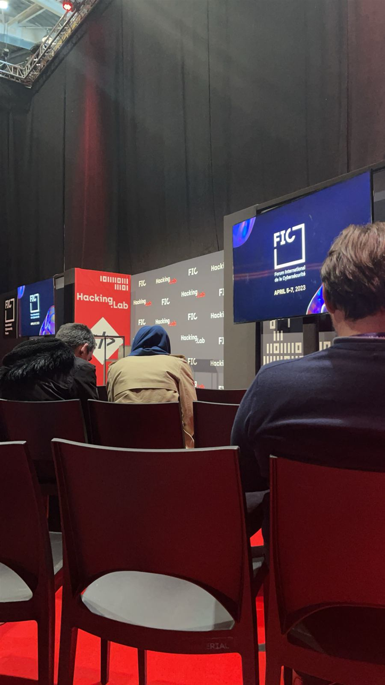
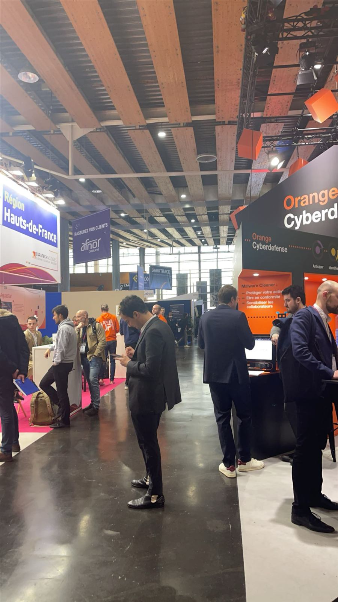
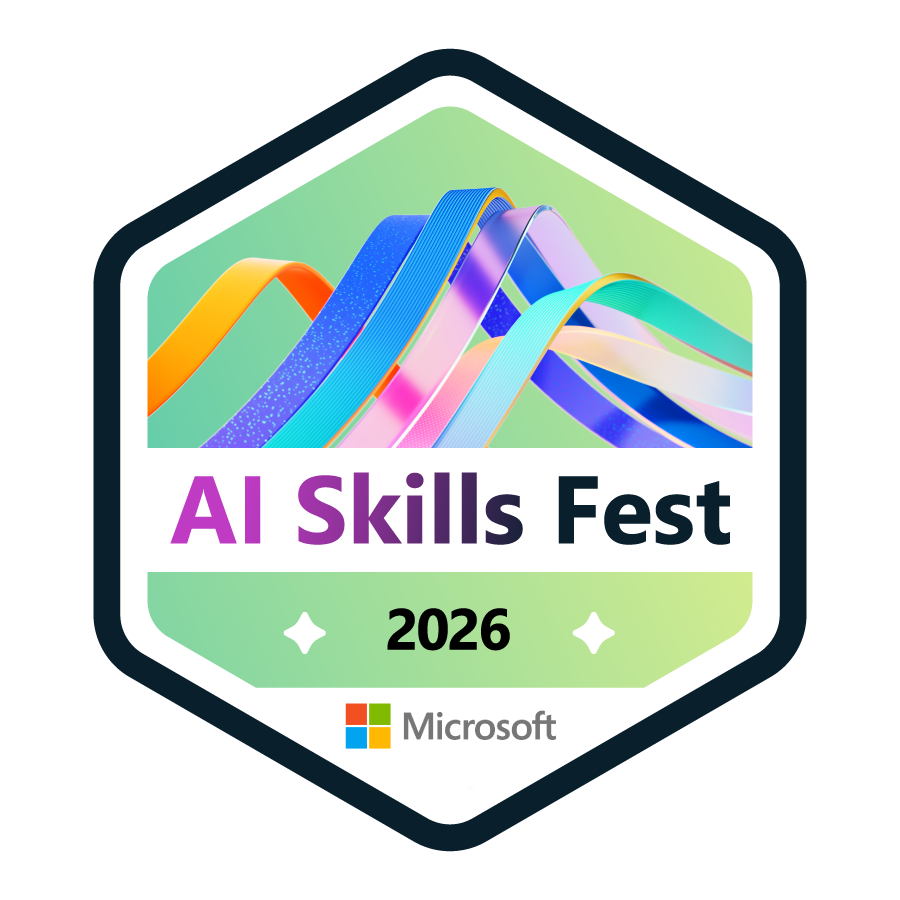

Événements
Salons & événements cyber
En dehors des bancs de l'école, je vais à la rencontre de l'écosystème cybersécurité sur le terrain.
FIC — Forum International de la Cybersécurité
Le FIC, à Lille, est l'un des plus grands rendez-vous européens de la cybersécurité. Je m'y rends chaque année en tant que visiteur, pour suivre les conférences, découvrir les nouveaux acteurs du marché et échanger avec des professionnels du secteur.
Première participation au salon : découverte de l'ampleur de l'événement et des grands acteurs de la cyberdéfense.
Retour au FIC pour approfondir mes connaissances et suivre les conférences sur la défense et la threat intelligence.
Troisième participation, avec une attention particulière portée aux usages de l'IA en cybersécurité.


Autres événements
Au-delà du FIC, je participe aussi à des événements de montée en compétences.

Microsoft AI Skills Fest 2026
Participation à l'événement Microsoft dédié à la montée en compétences autour de l'intelligence artificielle.